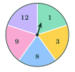
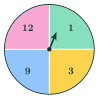
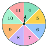

Probability of Events Related to a Random ExperimentXác suất của biến cố liên quan tới phép thử
Grade 9 · Topic: ProbabilityLớp 9 · Chủ đề: Xác suất của biến cố trong một số mô hình xác suất đơn giản
1Lesson IntroductionGiới thiệu bài học
Learning goalsMục tiêu bài học
By the end of this lesson you can:
Sau bài học này, em có thể:
recognize an event, its favorable outcomes and equally likely outcomes;
nhận biết được biến cố, kết quả thuận lợi cho biến cố và các kết quả đồng khả năng;
use \(P(A)=\dfrac{n(A)}{n(\Omega)}\) for one-step experiments;
dùng công thức \(P(A)=\dfrac{n(A)}{n(\Omega)}\) với phép thử một bước;
compute probabilities in two-step experiments (two dice, two spinners);
tính được xác suất trong phép thử hai bước (hai con xúc xắc, hai vòng quay);
use probabilities to make decisions (games at a school fair).
dùng xác suất để ra quyết định (trò chơi ở hội chợ trường).
2Mathematical VocabularyTừ vựng Toán học
event – a statement about the outcome of an experiment; it happens or does not happen.
Biến cố – một sự kiện liên quan đến kết quả của phép thử; nó có thể xảy ra hoặc không xảy ra.
favorable outcome – an outcome that makes the event happen.
Kết quả thuận lợi – kết quả làm cho biến cố xảy ra.
equally likely outcomes – outcomes that have the same chance.
Các kết quả đồng khả năng – các kết quả có khả năng xảy ra như nhau.
probability \(P(A)\) – a number from 0 to 1 measuring how likely \(A\) is.
Xác suất \(P(A)\) – số từ 0 đến 1 đo khả năng xảy ra của biến cố \(A\).
fair coin / fair die – a coin or die whose faces are equally likely.
Đồng xu, xúc xắc cân đối và đồng chất – các mặt có khả năng xuất hiện như nhau.
3Useful English PhrasesCụm từ tiếng Anh thường gặp
The outcomes 2, 4, 6 are favorable to the event \(A\).
Các kết quả 2, 4, 6 là các kết quả thuận lợi cho biến cố \(A\).
The outcomes are equally likely.
Các kết quả là đồng khả năng.
Find the probability of the event \(A\).
Tính xác suất của biến cố \(A\).
The probability of getting a sum of 7 is \(\dfrac{1}{6}\).
Xác suất để tổng số chấm bằng 7 là \(\dfrac{1}{6}\).
Which game gives you the best chance of winning?
Trò chơi nào cho em cơ hội thắng cao nhất?
4Prerequisite ReviewÔn tập kiến thức nền
Lesson 25. The sample space \(\Omega\) is the set of all possible outcomes; \(n(\Omega)\) is the number of its outcomes.
Bài 25. Không gian mẫu \(\Omega\) là tập hợp tất cả các kết quả có thể; \(n(\Omega)\) là số phần tử của nó.
Fractions. Simplify: \(\dfrac{6}{36}=\dfrac{1}{6}\).
Phân số. Rút gọn: \(\dfrac{6}{36}=\dfrac{1}{6}\).
5TheoryLý thuyết
5.1 Events and favorable outcomesBiến cố và kết quả thuận lợi
DefinitionĐịnh nghĩa
An event related to a random experiment is a statement about the outcome; after the experiment we know whether it happened. An outcome is favorable to the event \(A\) if, when it appears, \(A\) happens.
Biến cố liên quan tới phép thử là một sự kiện mà việc xảy ra hay không xảy ra của nó phụ thuộc vào kết quả của phép thử. Kết quả làm cho biến cố \(A\) xảy ra gọi là kết quả thuận lợi cho \(A\).
Roll a die. For the event \(A\): “the number is even”, the favorable outcomes are 2, 4, 6. If the die shows 3, then \(A\) does not happen.
Gieo một con xúc xắc. Với biến cố \(A\): “Số chấm xuất hiện là số chẵn”, các kết quả thuận lợi là 2, 4, 6. Nếu xúc xắc ra 3 chấm thì \(A\) không xảy ra.
5.2 The probability of an eventXác suất của biến cố
FormulaCông thức
Suppose the outcomes of the experiment are equally likely (fair coin, fair die, cards of the same shape…). Then the probability of the event \(A\) is
Giả sử các kết quả có thể của phép thử là đồng khả năng (đồng xu, xúc xắc cân đối và đồng chất, các tấm thẻ giống nhau…). Khi đó xác suất của biến cố \(A\) là
where \(n(A)\) is the number of favorable outcomes and \(n(\Omega)\) the number of all outcomes. Always \(0\le P(A)\le1\).
trong đó \(n(A)\) là số kết quả thuận lợi cho \(A\), \(n(\Omega)\) là số phần tử của không gian mẫu. Luôn có \(0\le P(A)\le1\).
StepsCác bước tính
Describe \(\Omega\) and count \(n(\Omega)\) (list, table or tree diagram).
Mô tả không gian mẫu và tính \(n(\Omega)\) (liệt kê, bảng hoặc sơ đồ hình cây).
Check that the outcomes are equally likely.
Kiểm tra các kết quả là đồng khả năng.
List and count the favorable outcomes \(n(A)\).
Liệt kê và đếm các kết quả thuận lợi \(n(A)\).
Compute \(P(A)=\dfrac{n(A)}{n(\Omega)}\) and simplify.
Tính \(P(A)=\dfrac{n(A)}{n(\Omega)}\) rồi rút gọn.
Extension: the complementary eventMở rộng: biến cố đối
The event “\(A\) does not happen” is the complementary event \(\overline{A}\). Its favorable outcomes are the other outcomes, so \(P(\overline{A})=1-P(A)\). Example: \(P(\text{not }6)=1-\dfrac{1}{6}=\dfrac{5}{6}\).
Biến cố “\(A\) không xảy ra” gọi là biến cố đối của \(A\), kí hiệu \(\overline{A}\). Các kết quả thuận lợi cho \(\overline{A}\) là các kết quả còn lại nên \(P(\overline{A})=1-P(A)\). Ví dụ: xác suất không ra 6 chấm là \(1-\dfrac{1}{6}=\dfrac{5}{6}\).
6Worked ExamplesVí dụ có lời giải
ExampleVí dụ 1RememberingNhận biết – Favorable outcomesKết quả thuận lợi
Roll a fair die. Let \(A\): “the number is a prime number”. Which outcomes are favorable to \(A\)? Does \(A\) happen if the die shows 4?
Gieo một con xúc xắc cân đối. Xét biến cố \(A\): “Số chấm xuất hiện là số nguyên tố”. Những kết quả nào thuận lợi cho \(A\)? Nếu xúc xắc ra 4 chấm thì \(A\) có xảy ra không?
Analysis: The primes from 1 to 6 are 2, 3, 5.
Phân tích: Các số nguyên tố từ 1 đến 6 là 2, 3, 5.
Favorable outcomes: 2, 3, 5.
Các kết quả thuận lợi: 2, 3, 5.
4 is not prime, so \(A\) does not happen.
4 không là số nguyên tố nên \(A\) không xảy ra.
2, 3, 5; no.
2, 3, 5; không.
ExampleVí dụ 2UnderstandingThông hiểu – Drawing a cardRút thẻ
A box has 20 cards numbered 1 to 20. Draw one card at random. Find the probability that the number is a multiple of 4.
Một hộp có 20 tấm thẻ đánh số từ 1 đến 20. Rút ngẫu nhiên một thẻ. Tính xác suất để số trên thẻ là bội của 4.
Analysis: The cards are the same, so the 20 outcomes are equally likely.
Phân tích: Các tấm thẻ giống nhau nên 20 kết quả là đồng khả năng.
\(n(\Omega)=20\). Favorable outcomes: 4, 8, 12, 16, 20, so \(n(A)=5\).
\(n(\Omega)=20\). Các kết quả thuận lợi: 4, 8, 12, 16, 20, nên \(n(A)=5\).
\(P(A)=\dfrac{5}{20}=\dfrac{1}{4}\).
\(P(A)=\dfrac{5}{20}=\dfrac{1}{4}\).
\(\dfrac{1}{4}\).
\(\dfrac{1}{4}\).
ExampleVí dụ 3Basic applicationVận dụng thấp – Two diceHai con xúc xắc
Roll two fair dice. Find the probability that the sum of the two numbers is 7.
Gieo hai con xúc xắc cân đối. Tính xác suất để tổng số chấm trên hai con xúc xắc bằng 7.
Analysis: Use the 6 × 6 table of Lesson 25 and highlight the favorable outcomes.
Phân tích: Dùng bảng 6 × 6 ở Bài 25 và tô màu các kết quả thuận lợi.
Die 1 \ Die 2Xúc xắc 1 \ Xúc xắc 2 1 2 3 4 5 6 1 \((1;\,1)\) \((1;\,2)\) \((1;\,3)\) \((1;\,4)\) \((1;\,5)\) \((1;\,6)\) 2 \((2;\,1)\) \((2;\,2)\) \((2;\,3)\) \((2;\,4)\) \((2;\,5)\) \((2;\,6)\) 3 \((3;\,1)\) \((3;\,2)\) \((3;\,3)\) \((3;\,4)\) \((3;\,5)\) \((3;\,6)\) 4 \((4;\,1)\) \((4;\,2)\) \((4;\,3)\) \((4;\,4)\) \((4;\,5)\) \((4;\,6)\) 5 \((5;\,1)\) \((5;\,2)\) \((5;\,3)\) \((5;\,4)\) \((5;\,5)\) \((5;\,6)\) 6 \((6;\,1)\) \((6;\,2)\) \((6;\,3)\) \((6;\,4)\) \((6;\,5)\) \((6;\,6)\) The 6 outcomes with sum 7 (highlighted)6 kết quả có tổng bằng 7 (được tô màu) \(n(\Omega)=36\), \(n(A)=6\): \(P(A)=\dfrac{6}{36}=\dfrac{1}{6}\).
\(n(\Omega)=36\), \(n(A)=6\): \(P(A)=\dfrac{6}{36}=\dfrac{1}{6}\).
\(\dfrac{1}{6}\).
\(\dfrac{1}{6}\).
ExampleVí dụ 4Basic applicationVận dụng thấp – Two spinnersHai vòng quay
Spinner A has the numbers 1, 2, 3 and spinner B has the numbers 1, 2, 3, 4 (equal sectors). Spin both and multiply the two numbers. Find the probability that the product is even.
Vòng quay A có các số 1, 2, 3; vòng quay B có các số 1, 2, 3, 4 (các hình quạt bằng nhau). Quay cả hai vòng rồi nhân hai số nhận được. Tính xác suất để tích là số chẵn.
Analysis: Make a table of the products: rows for A, columns for B.
Phân tích: Lập bảng các tích: hàng ứng với A, cột ứng với B.
A \ BA \ B 1 2 3 4 1 \(1\) \(2\) \(3\) \(4\) 2 \(2\) \(4\) \(6\) \(8\) 3 \(3\) \(6\) \(9\) \(12\) Products of the two numbers (even products highlighted)Tích hai số (tích chẵn được tô màu) \(n(\Omega)=3\cdot4=12\); there are 8 even products: \(P=\dfrac{8}{12}=\dfrac{2}{3}\).
\(n(\Omega)=3\cdot4=12\); có 8 tích chẵn: \(P=\dfrac{8}{12}=\dfrac{2}{3}\).
\(\dfrac{2}{3}\).
\(\dfrac{2}{3}\).
ExampleVí dụ 5ApplicationVận dụng – Games at the school fairTrò chơi ở hội chợ trường
At the school fair there are three games. Game 1: roll a die, you win if you get a 6. Game 2: toss two coins, you win if both show heads. Game 3: roll two dice, you win if the sum is at least 10.
(a) Which game gives the best chance of winning?
(b) In that game, what is the probability of NOT winning?
Hội chợ của trường có ba trò chơi. Trò 1: gieo một con xúc xắc, thắng nếu được mặt 6 chấm. Trò 2: gieo hai đồng xu, thắng nếu cả hai đều ngửa. Trò 3: gieo hai con xúc xắc, thắng nếu tổng số chấm không nhỏ hơn 10.
a) Trò chơi nào cho cơ hội thắng cao nhất?
b) Ở trò chơi đó, xác suất KHÔNG thắng là bao nhiêu?
Analysis: Compute the three probabilities and compare them.
Phân tích: Tính ba xác suất rồi so sánh.
Game 1: \(\dfrac{1}{6}\). Game 2: \(\Omega=\{HH;\,HT;\,TH;\,TT\}\), \(P=\dfrac{1}{4}\). Game 3: sums 10, 11, 12 come from \((4;\,6),(5;\,5),(6;\,4),(5;\,6),(6;\,5),(6;\,6)\), \(P=\dfrac{6}{36}=\dfrac{1}{6}\).
Trò 1: \(\dfrac{1}{6}\). Trò 2: \(\Omega=\{NN;\,NS;\,SN;\,SS\}\), \(P=\dfrac{1}{4}\). Trò 3: tổng 10, 11, 12 ứng với \((4;\,6),(5;\,5),(6;\,4),(5;\,6),(6;\,5),(6;\,6)\), \(P=\dfrac{6}{36}=\dfrac{1}{6}\).
(a) \(\dfrac{1}{4}\gt\dfrac{1}{6}\): game 2 is best.
(b) \(1-\dfrac{1}{4}=\dfrac{3}{4}\).a) \(\dfrac{1}{4}\gt\dfrac{1}{6}\): trò 2 có cơ hội thắng cao nhất. b) \(1-\dfrac{1}{4}=\dfrac{3}{4}\).
(a) Game 2;
(b) \(\dfrac{3}{4}\).
a) Trò 2;
b) \(\dfrac{3}{4}\).
7PracticeBài tập luyện tập
A. Multiple ChoiceA. Trắc nghiệm nhiều lựa chọn
A fair die is rolled once. Find the probability that it shows an even number.
Gieo một con xúc xắc cân đối một lần. Tính xác suất của biến cố “Số chấm chẵn”.
Answer: a. Favorable outcomes: 2, 4, 6, so \(P=\dfrac{3}{6}=\dfrac{1}{2}\).
Đáp án a. Các kết quả thuận lợi: 2, 4, 6, nên \(P=\dfrac{3}{6}=\dfrac{1}{2}\).
A box has 30 cards numbered 1 to 30. One card is drawn at random. What is the probability that its number is a multiple of 5?
Một hộp có 30 tấm thẻ đánh số từ 1 đến 30. Rút ngẫu nhiên một thẻ. Tính xác suất để số trên thẻ là bội của 5.
Answer: c. \(n(\Omega)=30\); multiples of 5: 5, 10, 15, 20, 25, 30 (6 cards); \(P=\dfrac{6}{30}=\dfrac{1}{5}\).
Đáp án c. \(n(\Omega)=30\); các bội của 5: 5, 10, 15, 20, 25, 30 (6 thẻ); \(P=\dfrac{6}{30}=\dfrac{1}{5}\).
A bag has 4 red, 6 yellow, 3 white balls of the same size. One ball is taken at random. Find the probability that it is red.
Một túi có 4 quả bóng đỏ, 6 quả bóng vàng, 3 quả bóng trắng; các quả bóng có cùng kích thước. Lấy ngẫu nhiên một quả. Tính xác suất lấy được quả bóng màu đỏ.
Answer: c. \(n(\Omega)=13\), favorable: 4; \(P=\dfrac{4}{13}\).
Đáp án c. \(n(\Omega)=13\), số kết quả thuận lợi: 4; \(P=\dfrac{4}{13}\).
B. True or FalseB. Đúng hoặc sai
Two fair coins are tossed. The probability that no coin shows heads is \(\dfrac{1}{4}\).
Gieo hai đồng xu cân đối. Xác suất của biến cố “Không có đồng xu nào ngửa” bằng \(\dfrac{1}{4}\).
True. \(\Omega=\{HH;\,HT;\,TH;\,TT\}\) (4 equally likely outcomes): \(P=\dfrac{1}{4}\).
Đúng. \(\Omega=\{NN;\,NS;\,SN;\,SS\}\) (4 kết quả đồng khả năng): \(P=\dfrac{1}{4}\).
Two dice are rolled. Exactly 3 outcomes are favorable to the event “the sum of the two numbers is 3”.
Gieo hai con xúc xắc. Có đúng 3 kết quả thuận lợi cho biến cố “Tổng số chấm trên hai con xúc xắc bằng 3”.
False. The favorable outcomes: \((1;\,2)\), \((2;\,1)\) (2 outcomes).
Sai. Các kết quả thuận lợi: \((1;\,2)\), \((2;\,1)\) (2 kết quả).
C. Short AnswerC. Trả lời ngắn
Two dice are rolled. How many outcomes are favorable to the event “both numbers are greater than 4”?
Gieo hai con xúc xắc. Có bao nhiêu kết quả thuận lợi cho biến cố “Cả hai số chấm đều lớn hơn 4”?
Enter a number.
Nhập một số.
Answer: 4. \((5;\,5)\), \((5;\,6)\), \((6;\,5)\), \((6;\,6)\): 4 outcomes.
Đáp số: 4. \((5;\,5)\), \((5;\,6)\), \((6;\,5)\), \((6;\,6)\): 4 kết quả.
Among 20 tickets, there are 4 winning tickets. One is chosen at random. Find the probability of getting a winning ticket (write it as a decimal).
Trong 20 lá phiếu có 4 phiếu trúng thưởng. Chọn ngẫu nhiên một lá phiếu. Tính xác suất chọn được phiếu trúng thưởng (viết dưới dạng số thập phân).
Enter a decimal (e.g. 0.25).
Nhập số thập phân (ví dụ 0,25).
Answer: 0.2. \(P=\dfrac{4}{20}=0.2\).
Đáp số: 0,2. \(P=\dfrac{4}{20}=0{,}2\).
D1. Self-practice – RememberingD1. Tự luyện – Mức Nhận biết
A die is rolled. Which set lists the outcomes favorable to the event “the die shows an even number”?
Gieo một con xúc xắc. Tập hợp nào gồm các kết quả thuận lợi cho biến cố “Số chấm chẵn”?
Answer: d. The outcomes that make the event happen: \(\{2;\,4;\,6\}\).
Đáp án d. Các kết quả làm cho biến cố xảy ra: \(\{2;\,4;\,6\}\).
Which number CANNOT be the probability of an event?
Số nào KHÔNG thể là xác suất của một biến cố?
Answer: a. Always \(0\le P(A)\le 1\).
Đáp án a. Luôn có \(0\le P(A)\le 1\).
The spinner has 5 equal sectors. It is spun once. What is the probability that the arrow stops at a number greater than 6?

Vòng quay có 5 hình quạt bằng nhau. Quay một lần. Tính xác suất để kim dừng ở số lớn hơn 6.
Answer: b. Favorable: 8, 9, 12; \(P=\dfrac{3}{5}\).
Đáp án b. Kết quả thuận lợi: 8, 9, 12; \(P=\dfrac{3}{5}\).
D2. Self-practice – UnderstandingD2. Tự luyện – Mức Thông hiểu
A fair coin is tossed and a fair die is rolled. Find the probability of getting tails and a number greater than 4.
Gieo một đồng xu và một con xúc xắc cân đối. Tính xác suất được mặt sấp và số chấm lớn hơn 4.
Answer: a. \(n(\Omega)=12\); favorable: \((T;\,5)\), \((T;\,6)\); \(P=\dfrac{2}{12}=\dfrac{1}{6}\).
Đáp án a. \(n(\Omega)=12\); thuận lợi: \((S;\,5)\), \((S;\,6)\); \(P=\dfrac{2}{12}=\dfrac{1}{6}\).
A whole number from 20 to 44 is chosen at random. What is the probability that it is a prime number?
Chọn ngẫu nhiên một số tự nhiên từ 20 đến 44. Tính xác suất để số được chọn là số nguyên tố.
Answer: c. \(n(\Omega)=44-20+1=25\); favorable: 23, 29, 31, 37, 41, 43; \(P=\dfrac{6}{25}\).
Đáp án c. \(n(\Omega)=44-20+1=25\); thuận lợi: 23, 29, 31, 37, 41, 43; \(P=\dfrac{6}{25}\).
| Spinner 1 \ Spinner 2 | 1 | 2 | 3 | 4 |
|---|---|---|---|---|
| 1 | \((1;\,1)\) | \((1;\,2)\) | \((1;\,3)\) | \((1;\,4)\) |
| 2 | \((2;\,1)\) | \((2;\,2)\) | \((2;\,3)\) | \((2;\,4)\) |
| 3 | \((3;\,1)\) | \((3;\,2)\) | \((3;\,3)\) | \((3;\,4)\) |
| 4 | \((4;\,1)\) | \((4;\,2)\) | \((4;\,3)\) | \((4;\,4)\) |
| Vòng 1 \ Vòng 2 | 1 | 2 | 3 | 4 |
|---|---|---|---|---|
| 1 | \((1;\,1)\) | \((1;\,2)\) | \((1;\,3)\) | \((1;\,4)\) |
| 2 | \((2;\,1)\) | \((2;\,2)\) | \((2;\,3)\) | \((2;\,4)\) |
| 3 | \((3;\,1)\) | \((3;\,2)\) | \((3;\,3)\) | \((3;\,4)\) |
| 4 | \((4;\,1)\) | \((4;\,2)\) | \((4;\,3)\) | \((4;\,4)\) |
Answer: c. \(n(\Omega)=16\); favorable: \((1;\,1)\), \((2;\,2)\), \((3;\,3)\), \((4;\,4)\); \(P=\dfrac{4}{16}=\dfrac{1}{4}\).
Đáp án c. \(n(\Omega)=16\); thuận lợi: \((1;\,1)\), \((2;\,2)\), \((3;\,3)\), \((4;\,4)\); \(P=\dfrac{4}{16}=\dfrac{1}{4}\).
D3. Self-practice – Basic applicationD3. Tự luyện – Mức Vận dụng thấp
Two fair dice are rolled. Find the probability of the event “the sum is 7”.
Gieo hai con xúc xắc cân đối. Tính xác suất của biến cố “Tổng số chấm bằng 7”.
Answer: a. \(n(\Omega)=36\); 6 favorable outcomes; \(P=\dfrac{6}{36}=\dfrac{1}{6}\).
Đáp án a. \(n(\Omega)=36\); có 6 kết quả thuận lợi; \(P=\dfrac{6}{36}=\dfrac{1}{6}\).
A box has 6 cards numbered 1 to 6. Draw a card, do not put it back, then draw a second card. Find the probability that the sum of the two numbers is greater than 7.
Hộp có 6 tấm thẻ đánh số từ 1 đến 6. Rút một thẻ, không trả lại, rồi rút thẻ thứ hai. Tính xác suất để tổng hai số lớn hơn 7.
Answer: a. \(n(\Omega)=6\cdot5=30\) ordered pairs; 12 of them are favorable; \(P=\dfrac{12}{30}=\dfrac{2}{5}\).
Đáp án a. \(n(\Omega)=6\cdot5=30\) cặp có thứ tự; có 12 cặp thuận lợi; \(P=\dfrac{12}{30}=\dfrac{2}{5}\).
A family has 3 children. Assume that boys (B) and girls (G) are equally likely and the order of birth matters. Find the probability that the family has all the children are of the same sex.
Một gia đình có 3 con. Giả sử sinh con trai (T) và con gái (G) là đồng khả năng và có phân biệt thứ tự sinh. Tính xác suất để gia đình đó các con đều cùng giới tính.
Answer: b. Tree diagram: \(n(\Omega)=2^{3}=8\); 2 favorable outcomes; \(P=\dfrac{2}{8}=\dfrac{1}{4}\).
Đáp án b. Sơ đồ hình cây: \(n(\Omega)=2^{3}=8\); có 2 kết quả thuận lợi; \(P=\dfrac{2}{8}=\dfrac{1}{4}\).
D4. Self-practice – Advanced applicationD4. Tự luyện – Mức Vận dụng
Minh and Hoa roll two dice. Minh wins if the sum is at least 8; otherwise Hoa wins. Who is more likely to win?
Minh và Hoa gieo hai con xúc xắc. Nếu tổng số chấm không nhỏ hơn 8 thì Minh thắng, ngược lại Hoa thắng. Bạn nào có khả năng thắng cao hơn?
Answer: c. Sum at least 8: 15 outcomes, so \(P(Minh)=\dfrac{15}{36}\), \(P(Hoa)=\dfrac{21}{36}\).
Đáp án c. Tổng không nhỏ hơn 8: có 15 kết quả, nên xác suất Minh thắng là \(\dfrac{15}{36}\), xác suất Hoa thắng là \(\dfrac{21}{36}\).
Two fair dice are rolled. What is the probability that at least one die shows a 6?
Gieo hai con xúc xắc cân đối. Tính xác suất để có ít nhất một con xúc xắc ra mặt 6 chấm.
Answer: b. Complement: no 6 on either die, \(5\cdot5=25\) outcomes. \(P=1-\dfrac{25}{36}=\dfrac{11}{36}\).
Đáp án b. Biến cố đối: không con nào ra 6 chấm, có \(5\cdot5=25\) kết quả. \(P=1-\dfrac{25}{36}=\dfrac{11}{36}\).
Box A has 9 balls, 7 of them red. Box B has 11 balls, 8 of them red. You win if you take a red ball. From which box should you take one ball at random?
Hộp A có 9 quả bóng, trong đó 7 quả màu đỏ. Hộp B có 11 quả bóng, trong đó 8 quả màu đỏ. Lấy được quả đỏ thì thắng. Nên lấy ngẫu nhiên một quả từ hộp nào?
Answer: d. \(P_A=\dfrac{7}{9}\approx0.78\), \(P_B=\dfrac{8}{11}\approx0.73\): choose box A.
Đáp án d. \(P_A=\dfrac{7}{9}\approx0{,}78\), \(P_B=\dfrac{8}{11}\approx0{,}73\): chọn hộp A.
A. Multiple ChoiceA. Trắc nghiệm nhiều lựa chọn
A fair die is rolled once. Find the probability that it shows an odd number.
Gieo một con xúc xắc cân đối một lần. Tính xác suất của biến cố “Số chấm lẻ”.
Answer: a. Favorable outcomes: 1, 3, 5, so \(P=\dfrac{3}{6}=\dfrac{1}{2}\).
Đáp án a. Các kết quả thuận lợi: 1, 3, 5, nên \(P=\dfrac{3}{6}=\dfrac{1}{2}\).
A box has 10 cards numbered 1 to 10. One card is drawn at random. What is the probability that its number is a prime number?
Một hộp có 10 tấm thẻ đánh số từ 1 đến 10. Rút ngẫu nhiên một thẻ. Tính xác suất để số trên thẻ là số nguyên tố.
Answer: b. \(n(\Omega)=10\); prime numbers: 2, 3, 5, 7 (4 cards); \(P=\dfrac{4}{10}=\dfrac{2}{5}\).
Đáp án b. \(n(\Omega)=10\); các số nguyên tố: 2, 3, 5, 7 (4 thẻ); \(P=\dfrac{4}{10}=\dfrac{2}{5}\).
A bag has 8 yellow, 5 red, 7 white balls of the same size. One ball is taken at random. Find the probability that it is yellow.
Một túi có 8 quả bóng vàng, 5 quả bóng đỏ, 7 quả bóng trắng; các quả bóng có cùng kích thước. Lấy ngẫu nhiên một quả. Tính xác suất lấy được quả bóng màu vàng.
Answer: b. \(n(\Omega)=20\), favorable: 8; \(P=\dfrac{8}{20}=\dfrac{2}{5}\).
Đáp án b. \(n(\Omega)=20\), số kết quả thuận lợi: 8; \(P=\dfrac{8}{20}=\dfrac{2}{5}\).
B. True or FalseB. Đúng hoặc sai
Two fair coins are tossed. The probability that at least one coin shows heads is \(\dfrac{3}{4}\).
Gieo hai đồng xu cân đối. Xác suất của biến cố “Có ít nhất một đồng xu ngửa” bằng \(\dfrac{3}{4}\).
True. \(\Omega=\{HH;\,HT;\,TH;\,TT\}\) (4 equally likely outcomes): \(P=\dfrac{3}{4}\).
Đúng. \(\Omega=\{NN;\,NS;\,SN;\,SS\}\) (4 kết quả đồng khả năng): \(P=\dfrac{3}{4}\).
Two dice are rolled. Exactly 3 outcomes are favorable to the event “the sum of the two numbers is 4”.
Gieo hai con xúc xắc. Có đúng 3 kết quả thuận lợi cho biến cố “Tổng số chấm trên hai con xúc xắc bằng 4”.
True. The favorable outcomes: \((1;\,3)\), \((2;\,2)\), \((3;\,1)\) (3 outcomes).
Đúng. Các kết quả thuận lợi: \((1;\,3)\), \((2;\,2)\), \((3;\,1)\) (3 kết quả).
C. Short AnswerC. Trả lời ngắn
Two dice are rolled. How many outcomes are favorable to the event “the two numbers differ by 2”?
Gieo hai con xúc xắc. Có bao nhiêu kết quả thuận lợi cho biến cố “Hai số chấm hơn kém nhau 2”?
Enter a number.
Nhập một số.
Answer: 8. \((1;\,3)\), \((2;\,4)\), \((3;\,1)\), \((3;\,5)\), \((4;\,2)\), \((4;\,6)\), \((5;\,3)\), \((6;\,4)\): 8 outcomes.
Đáp số: 8. \((1;\,3)\), \((2;\,4)\), \((3;\,1)\), \((3;\,5)\), \((4;\,2)\), \((4;\,6)\), \((5;\,3)\), \((6;\,4)\): 8 kết quả.
Among 25 seeds, there are 7 red-flower seeds. One is chosen at random. Find the probability of getting a red-flower seed (write it as a decimal).
Trong 25 hạt giống có 7 hạt cho hoa đỏ. Chọn ngẫu nhiên một hạt giống. Tính xác suất chọn được hạt cho hoa đỏ (viết dưới dạng số thập phân).
Enter a decimal (e.g. 0.25).
Nhập số thập phân (ví dụ 0,25).
Answer: 0.28. \(P=\dfrac{7}{25}=0.28\).
Đáp số: 0,28. \(P=\dfrac{7}{25}=0{,}28\).
D1. Self-practice – RememberingD1. Tự luyện – Mức Nhận biết
A die is rolled. Which set lists the outcomes favorable to the event “the die shows an odd number”?
Gieo một con xúc xắc. Tập hợp nào gồm các kết quả thuận lợi cho biến cố “Số chấm lẻ”?
Answer: d. The outcomes that make the event happen: \(\{1;\,3;\,5\}\).
Đáp án d. Các kết quả làm cho biến cố xảy ra: \(\{1;\,3;\,5\}\).
For which object are all the outcomes equally likely?
Với vật nào sau đây, các kết quả có thể là đồng khả năng?
Answer: d. A fair die: each face has the same chance \(\dfrac{1}{6}\).
Đáp án d. Xúc xắc cân đối và đồng chất: mỗi mặt có cùng khả năng xuất hiện \(\dfrac{1}{6}\).
The spinner has 4 equal sectors. It is spun once. What is the probability that the arrow stops at a number greater than 6?

Vòng quay có 4 hình quạt bằng nhau. Quay một lần. Tính xác suất để kim dừng ở số lớn hơn 6.
Answer: d. Favorable: 9, 12; \(P=\dfrac{2}{4}=\dfrac{1}{2}\).
Đáp án d. Kết quả thuận lợi: 9, 12; \(P=\dfrac{2}{4}=\dfrac{1}{2}\).
D2. Self-practice – UnderstandingD2. Tự luyện – Mức Thông hiểu
A fair coin is tossed and a fair die is rolled. Find the probability of getting heads and a 6.
Gieo một đồng xu và một con xúc xắc cân đối. Tính xác suất được mặt ngửa và mặt 6 chấm.
Answer: c. \(n(\Omega)=12\); favorable: \((H;\,6)\); \(P=\dfrac{1}{12}\).
Đáp án c. \(n(\Omega)=12\); thuận lợi: \((N;\,6)\); \(P=\dfrac{1}{12}\).
A whole number from 30 to 44 is chosen at random. What is the probability that it is a multiple of 7?
Chọn ngẫu nhiên một số tự nhiên từ 30 đến 44. Tính xác suất để số được chọn là bội của 7.
Answer: c. \(n(\Omega)=44-30+1=15\); favorable: 35, 42; \(P=\dfrac{2}{15}\).
Đáp án c. \(n(\Omega)=44-30+1=15\); thuận lợi: 35, 42; \(P=\dfrac{2}{15}\).
| Spinner 1 \ Spinner 2 | 1 | 2 | 3 | 4 |
|---|---|---|---|---|
| 1 | \((1;\,1)\) | \((1;\,2)\) | \((1;\,3)\) | \((1;\,4)\) |
| 2 | \((2;\,1)\) | \((2;\,2)\) | \((2;\,3)\) | \((2;\,4)\) |
| 3 | \((3;\,1)\) | \((3;\,2)\) | \((3;\,3)\) | \((3;\,4)\) |
| 4 | \((4;\,1)\) | \((4;\,2)\) | \((4;\,3)\) | \((4;\,4)\) |
| Vòng 1 \ Vòng 2 | 1 | 2 | 3 | 4 |
|---|---|---|---|---|
| 1 | \((1;\,1)\) | \((1;\,2)\) | \((1;\,3)\) | \((1;\,4)\) |
| 2 | \((2;\,1)\) | \((2;\,2)\) | \((2;\,3)\) | \((2;\,4)\) |
| 3 | \((3;\,1)\) | \((3;\,2)\) | \((3;\,3)\) | \((3;\,4)\) |
| 4 | \((4;\,1)\) | \((4;\,2)\) | \((4;\,3)\) | \((4;\,4)\) |
Answer: d. \(n(\Omega)=16\); favorable: \((2;\,1)\), \((3;\,1)\), \((3;\,2)\), \((4;\,1)\), \((4;\,2)\), \((4;\,3)\); \(P=\dfrac{6}{16}=\dfrac{3}{8}\).
Đáp án d. \(n(\Omega)=16\); thuận lợi: \((2;\,1)\), \((3;\,1)\), \((3;\,2)\), \((4;\,1)\), \((4;\,2)\), \((4;\,3)\); \(P=\dfrac{6}{16}=\dfrac{3}{8}\).
D3. Self-practice – Basic applicationD3. Tự luyện – Mức Vận dụng thấp
Two fair dice are rolled. Find the probability of the event “the two dice show the same number”.
Gieo hai con xúc xắc cân đối. Tính xác suất của biến cố “Hai con xúc xắc có cùng số chấm”.
Answer: a. \(n(\Omega)=36\); 6 favorable outcomes; \(P=\dfrac{6}{36}=\dfrac{1}{6}\).
Đáp án a. \(n(\Omega)=36\); có 6 kết quả thuận lợi; \(P=\dfrac{6}{36}=\dfrac{1}{6}\).
A box has 4 cards numbered 1 to 4. Draw a card, do not put it back, then draw a second card. Find the probability that the sum of the two numbers is greater than 5.
Hộp có 4 tấm thẻ đánh số từ 1 đến 4. Rút một thẻ, không trả lại, rồi rút thẻ thứ hai. Tính xác suất để tổng hai số lớn hơn 5.
Answer: a. \(n(\Omega)=4\cdot3=12\) ordered pairs; 4 of them are favorable; \(P=\dfrac{4}{12}=\dfrac{1}{3}\).
Đáp án a. \(n(\Omega)=4\cdot3=12\) cặp có thứ tự; có 4 cặp thuận lợi; \(P=\dfrac{4}{12}=\dfrac{1}{3}\).
A family has 3 children. Assume that boys (B) and girls (G) are equally likely and the order of birth matters. Find the probability that the family has at least one girl.
Một gia đình có 3 con. Giả sử sinh con trai (T) và con gái (G) là đồng khả năng và có phân biệt thứ tự sinh. Tính xác suất để gia đình đó có ít nhất một con gái.
Answer: d. Tree diagram: \(n(\Omega)=2^{3}=8\); 7 favorable outcomes; \(P=\dfrac{7}{8}\).
Đáp án d. Sơ đồ hình cây: \(n(\Omega)=2^{3}=8\); có 7 kết quả thuận lợi; \(P=\dfrac{7}{8}\).
D4. Self-practice – Advanced applicationD4. Tự luyện – Mức Vận dụng
Mai and Lan roll two dice. Mai wins if the sum is at least 8; otherwise Lan wins. Who is more likely to win?
Mai và Lan gieo hai con xúc xắc. Nếu tổng số chấm không nhỏ hơn 8 thì Mai thắng, ngược lại Lan thắng. Bạn nào có khả năng thắng cao hơn?
Answer: d. Sum at least 8: 15 outcomes, so \(P(Mai)=\dfrac{15}{36}\), \(P(Lan)=\dfrac{21}{36}\).
Đáp án d. Tổng không nhỏ hơn 8: có 15 kết quả, nên xác suất Mai thắng là \(\dfrac{15}{36}\), xác suất Lan thắng là \(\dfrac{21}{36}\).
Two fair dice are rolled. What is the probability that the two numbers are DIFFERENT?
Gieo hai con xúc xắc cân đối. Tính xác suất để hai số chấm KHÁC nhau.
Answer: a. Complement: both equal (6 outcomes). \(P=1-\dfrac{6}{36}=\dfrac{5}{6}\).
Đáp án a. Biến cố đối: hai số bằng nhau (6 kết quả). \(P=1-\dfrac{6}{36}=\dfrac{5}{6}\).
Box A has 8 balls, 7 of them red. Box B has 11 balls, 8 of them red. You win if you take a red ball. From which box should you take one ball at random?
Hộp A có 8 quả bóng, trong đó 7 quả màu đỏ. Hộp B có 11 quả bóng, trong đó 8 quả màu đỏ. Lấy được quả đỏ thì thắng. Nên lấy ngẫu nhiên một quả từ hộp nào?
Answer: d. \(P_A=\dfrac{7}{8}\approx0.88\), \(P_B=\dfrac{8}{11}\approx0.73\): choose box A.
Đáp án d. \(P_A=\dfrac{7}{8}\approx0{,}88\), \(P_B=\dfrac{8}{11}\approx0{,}73\): chọn hộp A.
A. Multiple ChoiceA. Trắc nghiệm nhiều lựa chọn
A fair die is rolled once. Find the probability that it shows a multiple of 3.
Gieo một con xúc xắc cân đối một lần. Tính xác suất của biến cố “Số chấm là bội của 3”.
Answer: a. Favorable outcomes: 3, 6, so \(P=\dfrac{2}{6}=\dfrac{1}{3}\).
Đáp án a. Các kết quả thuận lợi: 3, 6, nên \(P=\dfrac{2}{6}=\dfrac{1}{3}\).
A box has 30 cards numbered 1 to 30. One card is drawn at random. What is the probability that its number is a multiple of 4?
Một hộp có 30 tấm thẻ đánh số từ 1 đến 30. Rút ngẫu nhiên một thẻ. Tính xác suất để số trên thẻ là bội của 4.
Answer: c. \(n(\Omega)=30\); multiples of 4: 4, 8, 12, 16, 20, 24, 28 (7 cards); \(P=\dfrac{7}{30}\).
Đáp án c. \(n(\Omega)=30\); các bội của 4: 4, 8, 12, 16, 20, 24, 28 (7 thẻ); \(P=\dfrac{7}{30}\).
A bag has 2 white, 7 yellow, 8 blue balls of the same size. One ball is taken at random. Find the probability that it is white.
Một túi có 2 quả bóng trắng, 7 quả bóng vàng, 8 quả bóng xanh; các quả bóng có cùng kích thước. Lấy ngẫu nhiên một quả. Tính xác suất lấy được quả bóng màu trắng.
Answer: d. \(n(\Omega)=17\), favorable: 2; \(P=\dfrac{2}{17}\).
Đáp án d. \(n(\Omega)=17\), số kết quả thuận lợi: 2; \(P=\dfrac{2}{17}\).
B. True or FalseB. Đúng hoặc sai
Two fair coins are tossed. The probability that the two coins show the same side is \(\dfrac{1}{2}\).
Gieo hai đồng xu cân đối. Xác suất của biến cố “Hai đồng xu cùng mặt” bằng \(\dfrac{1}{2}\).
True. \(\Omega=\{HH;\,HT;\,TH;\,TT\}\) (4 equally likely outcomes): \(P=\dfrac{1}{2}\).
Đúng. \(\Omega=\{NN;\,NS;\,SN;\,SS\}\) (4 kết quả đồng khả năng): \(P=\dfrac{1}{2}\).
Two dice are rolled. Exactly 4 outcomes are favorable to the event “the sum of the two numbers is 9”.
Gieo hai con xúc xắc. Có đúng 4 kết quả thuận lợi cho biến cố “Tổng số chấm trên hai con xúc xắc bằng 9”.
True. The favorable outcomes: \((3;\,6)\), \((4;\,5)\), \((5;\,4)\), \((6;\,3)\) (4 outcomes).
Đúng. Các kết quả thuận lợi: \((3;\,6)\), \((4;\,5)\), \((5;\,4)\), \((6;\,3)\) (4 kết quả).
C. Short AnswerC. Trả lời ngắn
Two dice are rolled. How many outcomes are favorable to the event “the product of the two numbers is 4”?
Gieo hai con xúc xắc. Có bao nhiêu kết quả thuận lợi cho biến cố “Tích số chấm trên hai con xúc xắc bằng 4”?
Enter a number.
Nhập một số.
Answer: 3. \((1;\,4)\), \((2;\,2)\), \((4;\,1)\): 3 outcomes.
Đáp số: 3. \((1;\,4)\), \((2;\,2)\), \((4;\,1)\): 3 kết quả.
Among 20 seeds, there are 9 red-flower seeds. One is chosen at random. Find the probability of getting a red-flower seed (write it as a decimal).
Trong 20 hạt giống có 9 hạt cho hoa đỏ. Chọn ngẫu nhiên một hạt giống. Tính xác suất chọn được hạt cho hoa đỏ (viết dưới dạng số thập phân).
Enter a decimal (e.g. 0.25).
Nhập số thập phân (ví dụ 0,25).
Answer: 0.45. \(P=\dfrac{9}{20}=0.45\).
Đáp số: 0,45. \(P=\dfrac{9}{20}=0{,}45\).
D1. Self-practice – RememberingD1. Tự luyện – Mức Nhận biết
A die is rolled. Which set lists the outcomes favorable to the event “the die shows a number at least 2”?
Gieo một con xúc xắc. Tập hợp nào gồm các kết quả thuận lợi cho biến cố “Số chấm không nhỏ hơn 2”?
Answer: c. The outcomes that make the event happen: \(\{2;\,3;\,4;\,5;\,6\}\).
Đáp án c. Các kết quả làm cho biến cố xảy ra: \(\{2;\,3;\,4;\,5;\,6\}\).
The outcomes of an experiment are equally likely; \(n(A)\) is the number of favorable outcomes of \(A\). Then…
Các kết quả của phép thử là đồng khả năng; \(n(A)\) là số kết quả thuận lợi cho \(A\). Khi đó…
Answer: b. \(P(A)=\dfrac{n(A)}{n(\Omega)}\).
Đáp án b. \(P(A)=\dfrac{n(A)}{n(\Omega)}\).
The spinner has 8 equal sectors. It is spun once. What is the probability that the arrow stops at a number greater than 6?

Vòng quay có 8 hình quạt bằng nhau. Quay một lần. Tính xác suất để kim dừng ở số lớn hơn 6.
Answer: d. Favorable: 7, 8, 9, 10, 11; \(P=\dfrac{5}{8}\).
Đáp án d. Kết quả thuận lợi: 7, 8, 9, 10, 11; \(P=\dfrac{5}{8}\).
D2. Self-practice – UnderstandingD2. Tự luyện – Mức Thông hiểu
A fair coin is tossed and a fair die is rolled. Find the probability of getting tails and a number at most 2.
Gieo một đồng xu và một con xúc xắc cân đối. Tính xác suất được mặt sấp và số chấm không quá 2.
Answer: b. \(n(\Omega)=12\); favorable: \((T;\,1)\), \((T;\,2)\); \(P=\dfrac{2}{12}=\dfrac{1}{6}\).
Đáp án b. \(n(\Omega)=12\); thuận lợi: \((S;\,1)\), \((S;\,2)\); \(P=\dfrac{2}{12}=\dfrac{1}{6}\).
A whole number from 20 to 34 is chosen at random. What is the probability that it is a number with two equal digits?
Chọn ngẫu nhiên một số tự nhiên từ 20 đến 34. Tính xác suất để số được chọn là số có hai chữ số giống nhau.
Answer: c. \(n(\Omega)=34-20+1=15\); favorable: 22, 33; \(P=\dfrac{2}{15}\).
Đáp án c. \(n(\Omega)=34-20+1=15\); thuận lợi: 22, 33; \(P=\dfrac{2}{15}\).
| Spinner 1 \ Spinner 2 | 1 | 2 | 3 | 4 |
|---|---|---|---|---|
| 1 | \((1;\,1)\) | \((1;\,2)\) | \((1;\,3)\) | \((1;\,4)\) |
| 2 | \((2;\,1)\) | \((2;\,2)\) | \((2;\,3)\) | \((2;\,4)\) |
| 3 | \((3;\,1)\) | \((3;\,2)\) | \((3;\,3)\) | \((3;\,4)\) |
| 4 | \((4;\,1)\) | \((4;\,2)\) | \((4;\,3)\) | \((4;\,4)\) |
| Vòng 1 \ Vòng 2 | 1 | 2 | 3 | 4 |
|---|---|---|---|---|
| 1 | \((1;\,1)\) | \((1;\,2)\) | \((1;\,3)\) | \((1;\,4)\) |
| 2 | \((2;\,1)\) | \((2;\,2)\) | \((2;\,3)\) | \((2;\,4)\) |
| 3 | \((3;\,1)\) | \((3;\,2)\) | \((3;\,3)\) | \((3;\,4)\) |
| 4 | \((4;\,1)\) | \((4;\,2)\) | \((4;\,3)\) | \((4;\,4)\) |
Answer: a. \(n(\Omega)=16\); favorable: \((1;\,3)\), \((2;\,2)\), \((3;\,1)\); \(P=\dfrac{3}{16}\).
Đáp án a. \(n(\Omega)=16\); thuận lợi: \((1;\,3)\), \((2;\,2)\), \((3;\,1)\); \(P=\dfrac{3}{16}\).
D3. Self-practice – Basic applicationD3. Tự luyện – Mức Vận dụng thấp
Two fair dice are rolled. Find the probability of the event “the sum is at least 11”.
Gieo hai con xúc xắc cân đối. Tính xác suất của biến cố “Tổng số chấm không nhỏ hơn 11”.
Answer: b. \(n(\Omega)=36\); 3 favorable outcomes; \(P=\dfrac{3}{36}=\dfrac{1}{12}\).
Đáp án b. \(n(\Omega)=36\); có 3 kết quả thuận lợi; \(P=\dfrac{3}{36}=\dfrac{1}{12}\).
A box has 5 cards numbered 1 to 5. Draw a card, do not put it back, then draw a second card. Find the probability that the sum of the two numbers is greater than 6.
Hộp có 5 tấm thẻ đánh số từ 1 đến 5. Rút một thẻ, không trả lại, rồi rút thẻ thứ hai. Tính xác suất để tổng hai số lớn hơn 6.
Answer: d. \(n(\Omega)=5\cdot4=20\) ordered pairs; 8 of them are favorable; \(P=\dfrac{8}{20}=\dfrac{2}{5}\).
Đáp án d. \(n(\Omega)=5\cdot4=20\) cặp có thứ tự; có 8 cặp thuận lợi; \(P=\dfrac{8}{20}=\dfrac{2}{5}\).
A family has 3 children. Assume that boys (B) and girls (G) are equally likely and the order of birth matters. Find the probability that the family has exactly one girl.
Một gia đình có 3 con. Giả sử sinh con trai (T) và con gái (G) là đồng khả năng và có phân biệt thứ tự sinh. Tính xác suất để gia đình đó có đúng một con gái.
Answer: d. Tree diagram: \(n(\Omega)=2^{3}=8\); 3 favorable outcomes; \(P=\dfrac{3}{8}\).
Đáp án d. Sơ đồ hình cây: \(n(\Omega)=2^{3}=8\); có 3 kết quả thuận lợi; \(P=\dfrac{3}{8}\).
D4. Self-practice – Advanced applicationD4. Tự luyện – Mức Vận dụng
An and Nam roll two dice. An wins if the sum is at least 9; otherwise Nam wins. Who is more likely to win?
An và Nam gieo hai con xúc xắc. Nếu tổng số chấm không nhỏ hơn 9 thì An thắng, ngược lại Nam thắng. Bạn nào có khả năng thắng cao hơn?
Answer: c. Sum at least 9: 10 outcomes, so \(P(An)=\dfrac{10}{36}\), \(P(Nam)=\dfrac{26}{36}\).
Đáp án c. Tổng không nhỏ hơn 9: có 10 kết quả, nên xác suất An thắng là \(\dfrac{10}{36}\), xác suất Nam thắng là \(\dfrac{26}{36}\).
In a school fair, 2 of the 50 lucky tickets win a prize. A student buys one ticket. What is the probability that the ticket does NOT win?
Ở hội chợ của trường, trong 50 phiếu bốc thăm có 2 phiếu trúng thưởng. Một bạn mua một phiếu. Tính xác suất để phiếu đó KHÔNG trúng thưởng.
Answer: c. \(P(\overline{A})=1-P(A)=1-\dfrac{2}{50}=\dfrac{24}{25}\).
Đáp án c. \(P(\overline{A})=1-P(A)=1-\dfrac{2}{50}=\dfrac{24}{25}\).
Box A has 15 balls, 7 of them red. Box B has 8 balls, 5 of them red. You win if you take a red ball. From which box should you take one ball at random?
Hộp A có 15 quả bóng, trong đó 7 quả màu đỏ. Hộp B có 8 quả bóng, trong đó 5 quả màu đỏ. Lấy được quả đỏ thì thắng. Nên lấy ngẫu nhiên một quả từ hộp nào?
Answer: b. \(P_A=\dfrac{7}{15}\approx0.47\), \(P_B=\dfrac{5}{8}\approx0.62\): choose box B.
Đáp án b. \(P_A=\dfrac{7}{15}\approx0{,}47\), \(P_B=\dfrac{5}{8}\approx0{,}62\): chọn hộp B.
8Common MistakesLỗi thường gặp
Using the formula when outcomes are not equally likely. For the sum of two dice, the sums 2, 3, …, 12 are NOT equally likely; use the 36 ordered pairs.
Dùng công thức khi các kết quả không đồng khả năng. Với tổng số chấm của hai xúc xắc, các tổng 2, 3, …, 12 KHÔNG đồng khả năng; phải dùng 36 cặp có thứ tự.
Turning the fraction upside down. \(P(A)=\dfrac{n(A)}{n(\Omega)}\le1\).
Viết ngược phân số. \(P(A)=\dfrac{n(A)}{n(\Omega)}\le1\).
Forgetting some favorable outcomes. \((2;\,5)\) and \((5;\,2)\) are both favorable to “sum 7”.
Bỏ sót kết quả thuận lợi. Cả \((2;\,5)\) và \((5;\,2)\) đều thuận lợi cho “tổng bằng 7”.
Comparing counts instead of probabilities. More red balls does not always mean a better chance: compare \(\dfrac{n(A)}{n(\Omega)}\).
So sánh số lượng thay vì xác suất. Nhiều quả đỏ hơn chưa chắc có cơ hội cao hơn: phải so sánh \(\dfrac{n(A)}{n(\Omega)}\).
9Lesson SummaryTổng kết
Favorable outcomes of \(A\): the outcomes that make \(A\) happen.
Kết quả thuận lợi cho \(A\): các kết quả làm cho \(A\) xảy ra.
If the outcomes are equally likely: \(P(A)=\dfrac{n(A)}{n(\Omega)}\), \(0\le P(A)\le1\).
Nếu các kết quả đồng khả năng: \(P(A)=\dfrac{n(A)}{n(\Omega)}\), \(0\le P(A)\le1\).
Two-step experiments: count with a table or a tree diagram. Extension: \(P(\overline{A})=1-P(A)\).
Phép thử hai bước: đếm bằng bảng hoặc sơ đồ hình cây. Mở rộng: \(P(\overline{A})=1-P(A)\).
Key English: event, favorable outcome, equally likely, probability, fair die.
Thuật ngữ cần nhớ (chạm vào để xem tiếng Anh): biến cố, kết quả thuận lợi, đồng khả năng, xác suất, cân đối và đồng chất.